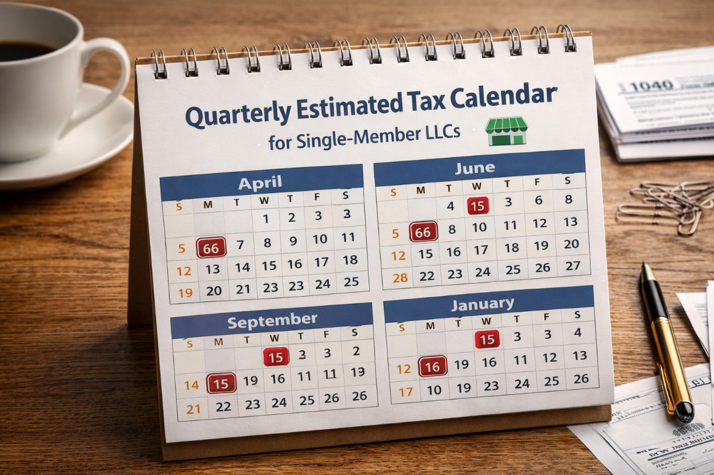

Step-by-step instructions for LLC owners on federal, state, and self-employment taxes, deductions, and quarterly payments to stay compliant and save legally.
Starting a Single-Member LLC (SMLLC) is a common step for entrepreneurs looking to formalize their business while protecting personal assets. However, forming an LLC is only the first part of the journey; understanding how taxes work is crucial. By default, the IRS treats a Single-Member LLC as a disregarded entity, meaning the business itself is not taxed separately. Instead, all income flows directly to the owner’s personal tax return. While this simplifies the process compared to a corporation, it also places responsibility squarely on the owner to calculate and pay federal, state, and self-employment taxes accurately.
Most SMLLC owners will report business income on Schedule C (Profit or Loss from Business) attached to Form 1040. This form captures gross revenue, deductible expenses, and the resulting net profit, which becomes part of your taxable income. If your net earnings exceed $400, you must also file Schedule SE to calculate self-employment tax, which covers Social Security (12.4%) and Medicare (2.9%), totaling 15.3%. Unlike employees whose taxes are withheld, LLC owners pay both portions themselves, making careful tracking of income and expenses critical. Proper bookkeeping is essential not only to calculate taxes correctly but also to take full advantage of deductions like home office expenses, utilities, software subscriptions, equipment, mileage, and professional services.
Although a Single-Member LLC is treated as a disregarded entity federally, some owners may choose to elect S Corporation status. This election can provide tax advantages in certain situations, especially if the business generates enough profit to justify paying a reasonable salary and distributing the remainder as dividends. However, this introduces additional filing requirements and payroll obligations. For most new or small LLCs, the default sole proprietorship treatment is simpler, but it is worth consulting a tax professional to determine if an S Corp election makes sense based on your projected income and business structure.
State-level obligations are equally important. While states like Texas and Florida do not impose personal income taxes, others, such as California or New York, have their own filing requirements and fees for LLCs. Some states require annual reports, franchise taxes, or minimum fees regardless of profitability. Overlooking these obligations can lead to penalties, interest, or even the revocation of your LLC’s good standing, so understanding your state’s requirements is critical to maintaining compliance and avoiding unnecessary costs.
Filing taxes as a Single-Member LLC involves a combination of federal and state forms. At the federal level, the cornerstone is Schedule C, where you report all business income and expenses. Your net profit from Schedule C is then reported on Form 1040 as part of your personal taxable income. Alongside Schedule C, Schedule SE calculates the self-employment tax you owe, which must be added to your income tax liability. For LLC owners who elect S Corp status, additional forms such as Form 1120-S and payroll filings become necessary, but most single-member LLCs will only need Schedule C and Schedule SE. At the state level, requirements vary, but common filings include annual franchise taxes, state income tax returns, and possibly local business taxes. Keeping a checklist of all required forms and deadlines is a best practice that prevents missed filings and costly penalties.

One of the advantages of operating a Single-Member LLC is the ability to deduct legitimate business expenses, which directly reduce taxable income. Deductible items often include a home office, business-related travel, internet and phone usage, office supplies, equipment purchases, and professional services like accounting or legal fees. Tracking mileage for business travel and maintaining receipts for all expenditures is essential. Beyond deductions, strategic tax planning—such as contributing to a Solo 401(k) or IRA, making estimated quarterly payments, and planning for large business purchases—can significantly reduce overall tax liability. Even small business owners benefit from proactive planning, as it can prevent a surprise tax bill at the end of the year and help maintain healthy cash flow throughout.
Because Single-Member LLC owners do not have taxes withheld like employees, the IRS requires estimated tax payments four times per year if you expect to owe $1,000 or more in taxes. These payments cover both federal income tax and self-employment tax. Using a Quarterly Tax Calculator can simplify this process by estimating how much you should pay each quarter based on projected earnings and deductions. Consistent quarterly payments prevent penalties and interest charges and help you avoid the stress of a large tax bill at year-end.
New Single-Member LLC owners often make avoidable mistakes that can trigger audits, fines, or overpayment of taxes. Common errors include mixing personal and business finances, failing to track deductions, underestimating self-employment tax, missing quarterly payments, and misunderstanding state obligations. Separating your business bank account from your personal account, keeping meticulous records, and reviewing tax rules regularly can prevent these pitfalls. In addition, consulting a CPA for complex situations—such as multi-state operations or high-revenue businesses—provides an extra layer of protection and peace of mind.
To assist with accurate tax calculations and planning, consider using our suite of calculators. The 1099 Tax Calculator provides detailed estimates of federal and state taxes based on your income, while the Quarterly Tax Calculator helps plan your required estimated payments. For maximizing deductions, our Freelance Deduction Calculator ensures you account for all eligible business expenses. By leveraging these tools, Single-Member LLC owners can save time, reduce errors, and confidently manage their tax obligations throughout the year.
Filing taxes as a Single-Member LLC does not have to be complicated, but it does require diligence, planning, and awareness of both federal and state obligations. By understanding how your LLC is taxed, keeping detailed records, making quarterly estimated payments, and leveraging legal deductions, you can minimize your tax burden while staying fully compliant. Combining careful record-keeping with the right tools and professional guidance ensures your business maintains good standing with the IRS and positions it for long-term growth and financial stability.

Estimate federal and state taxes based on your 1099 income quickly and accurately.

Plan and calculate quarterly tax payments to stay compliant and avoid penalties.

Maximize deductible expenses to reduce taxable income as a freelancer or independent contractor.